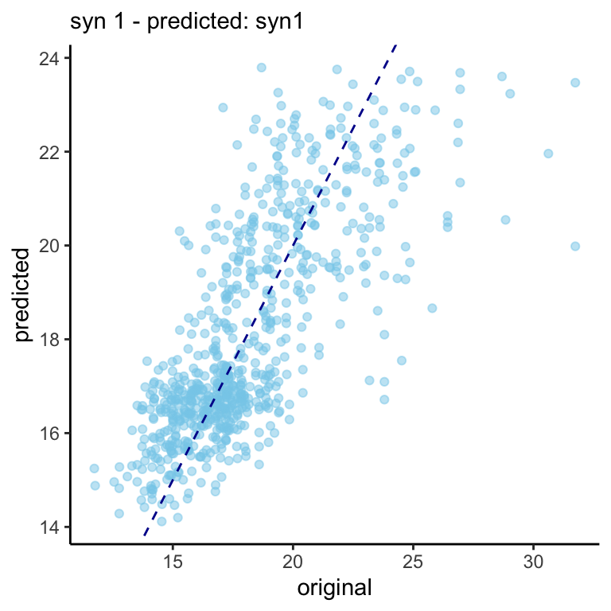

library(mice)
library(dplyr)
library(ggmice)
library(magrittr)
library(purrr)
library(furrr)
library(ggplot2)
set.seed(123)Small simulation
Load required packages
Outline idea
If we assume that synthetic data generation went well1, then we would expect that any model would fit equally well if:
- calculated on the original (true) data, and validated on synthetic sets.
- calculated on synthetic sets and validated on the original data.
Outline simulation
- impute the
boysdata set withm=1 - synthesize the imputed
boysdata setm=5times. Usemeth = "cart". - fit the model
lm(bmi ~ age + hgt + age:hgt + hc)on the boys data set and on the synthetic sets independently. So 6 models. - Apply all 6 models to the remaining 5 data sets and see if you can correctly predict
bmifrom the model build on another data set.6x5x4x3x2x1 - calculate some interisting statistics. (mse/rmse? or any of the other prediction methods that predictors are always so fond of).
Impute boys to obtain comparative truth
pred <- make.predictorMatrix(boys)
meth <- make.method(boys)
pred[c("hgt", "wgt"), "bmi"] <- 0
meth["bmi"] <- "~ I(wgt/(hgt/100)^2)"
imp <- mice(boys,
m=1,
maxit = 10,
pred = pred,
meth = meth,
print = FALSE)
truth <- complete(imp)Synthesize
syn <- mice(truth,
meth = "cart",
m = 5,
maxit = 1,
print = FALSE) %>%
complete("all")Fit models
lm.truth <- truth %$% lm(bmi ~ age + hgt + age:hgt + hc)
lm.syn <- syn %>%
map(~.x %$% lm(bmi ~ age + hgt + age:hgt + hc)) %>%
setNames(paste0("syn", 1:5))Fit
# add truth to the list of synthetic values
full <- syn %>%
append(list(truth)) %>%
setNames(c(paste0("syn", 1:5), "truth"))
# extract bmi values - bmis are all the same?
bmis <- syn %>%
map(~ .x$bmi
) %>%
append(list(truth$bmi)) %>%
setNames(c(paste0("syn", 1:5), "truth"))
# then compare the predictions
res <- expand.grid(full, lm.syn) %>%
transmute(predicted = pmap(list(Var1, Var2),
function(Var1, Var2) unname(predict(Var2, newdata = Var1)))) %>%
mutate(original = rep(bmis, 5)) %>%
set_rownames(paste("syn", rep(1:5,each=6), "- predicted:", names(.$predicted)))
# plot the predictions against original values of bmi
plots1 <- res %>%
apply(1, function(x) data.frame(predicted = unlist(x$predicted), original = unlist(x$original))) %>%
imap(~ggplot(.x, aes(x = original, y = predicted)) +
geom_point(col="skyblue", alpha =0.5) +
geom_abline(intercept = 0, slope = 1, col = "#000099", lty=2) +
labs(subtitle = .y) +
theme_classic()
)
# combine six random plots - look all the same?
ggpubr::ggarrange(plotlist = sample(plots1, 6) , nrow = 2, ncol=3)
RMSE
rmse <- res %>%
apply(1, function(x) data.frame(predicted = unlist(x$predicted), original = unlist(x$original))) %>%
map(~ sqrt(mean((.x$predicted - .x$original)^2))
) %>% unlist()
rmse %>% knitr::kable(col.names="RMSE") | RMSE | |
|---|---|
| syn 1 - predicted: syn1 | 2.051743 |
| syn 1 - predicted: syn2 | 2.051743 |
| syn 1 - predicted: syn3 | 2.051743 |
| syn 1 - predicted: syn4 | 2.051743 |
| syn 1 - predicted: syn5 | 2.051743 |
| syn 1 - predicted: truth | 2.051743 |
| syn 2 - predicted: syn1 | 2.051743 |
| syn 2 - predicted: syn2 | 2.051743 |
| syn 2 - predicted: syn3 | 2.051743 |
| syn 2 - predicted: syn4 | 2.051743 |
| syn 2 - predicted: syn5 | 2.051743 |
| syn 2 - predicted: truth | 2.051743 |
| syn 3 - predicted: syn1 | 2.051743 |
| syn 3 - predicted: syn2 | 2.051743 |
| syn 3 - predicted: syn3 | 2.051743 |
| syn 3 - predicted: syn4 | 2.051743 |
| syn 3 - predicted: syn5 | 2.051743 |
| syn 3 - predicted: truth | 2.051743 |
| syn 4 - predicted: syn1 | 2.051743 |
| syn 4 - predicted: syn2 | 2.051743 |
| syn 4 - predicted: syn3 | 2.051743 |
| syn 4 - predicted: syn4 | 2.051743 |
| syn 4 - predicted: syn5 | 2.051743 |
| syn 4 - predicted: truth | 2.051743 |
| syn 5 - predicted: syn1 | 2.051743 |
| syn 5 - predicted: syn2 | 2.051743 |
| syn 5 - predicted: syn3 | 2.051743 |
| syn 5 - predicted: syn4 | 2.051743 |
| syn 5 - predicted: syn5 | 2.051743 |
| syn 5 - predicted: truth | 2.051743 |
Footnotes
Well is a relatively ambiguous term. But I mean that the data would be suitable for a large set of candidate analysis models. Which is not necessarily cf. Rubin.↩︎